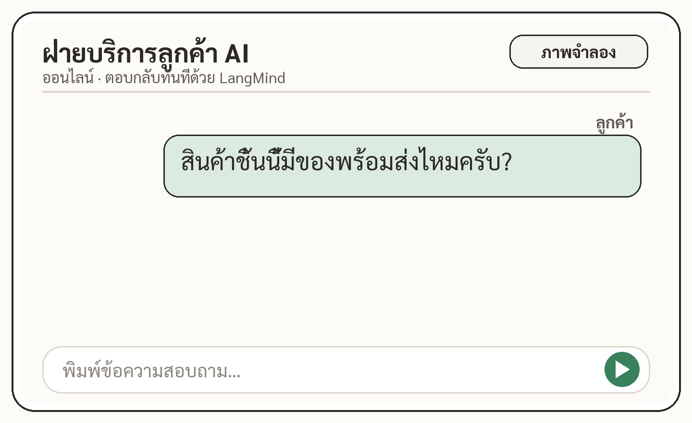
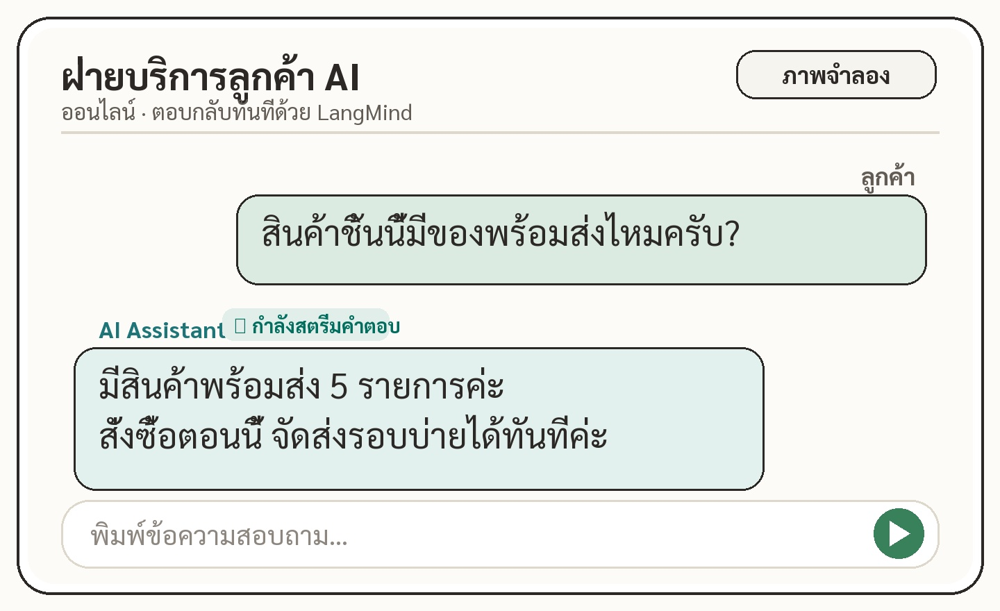
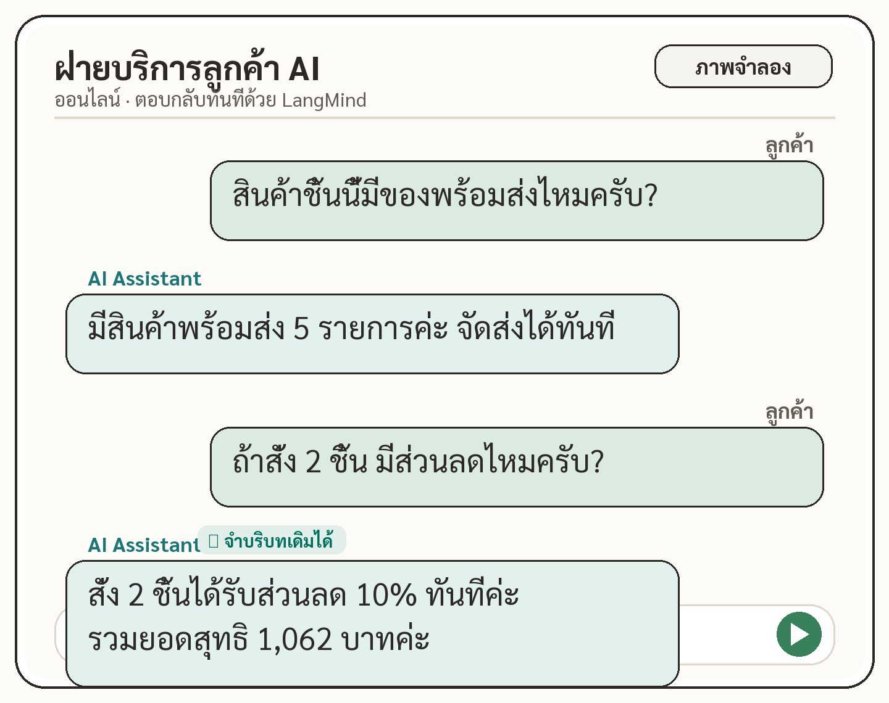

EP03 / CHAT API
ภาพจำลอง
1 เตรียม2 เชื่อม3 ใช้ผล
แอปที่มีแชตบอต AIทำได้ยังไง?


แชตบอตตอบช้า หรือจำเรื่องเดิมไม่ได้?
ต่อ Chat API ให้ตอบแบบสตรีมมิ่ง พิมพ์สดทีละคำ และจำบริบทคุยต่อได้ทันที
ต่อ Chat API ให้ตอบแบบสตรีมมิ่ง พิมพ์สดทีละคำ และจำบริบทคุยต่อได้ทันที
เตรียมอะไร?
เชื่อมตรงไหน?
ใช้ผลยังไง?

ภาพรวมทั้งหมดChat API ทำงานร่วมกับแอปยังไง
แอปของคุณ= หน้าร้าน (รับคำถามลูกค้า)
ส่งคำถามผ่านหลังบ้าน
สตรีมตอบพิมพ์สดทีละคำ
LangMind Chat API= สมอง AI
แอปพลิเคชันของคุณ (Client)แสดงหน้าแชต · ส่งคำถามผู้ใช้
คำถามผู้ใช้
สตรีมคำตอบ
เซิร์ฟเวอร์หลังบ้าน (Backend Server)เก็บ API Key ปลอดภัย · เรียก Chat API
Key1 เริ่มห้อง2 สตรีมสด3 ถามต่อ
ประมวลผล
LangMind Chat API & Agentประมวลผลคำตอบ · สตรีมข้อความ Real-time
1เตรียมต้องมี 3 อย่าง
Agent ใน LangMindตั้งค่าผู้ช่วย AI และข้อมูลร้านค้าไว้
ready ✓ข้อมูลสินค้าคำนวณส่วนลด
API Key (Personal Token)lmpat_••••••••
chat:invokeagents:read
เซิร์ฟเวอร์หลังบ้านเก็บ API Key ปลอดภัย · ห้ามใส่ในหน้าเว็บ
ห้ามใส่ในเว็บ
ข้อควรระวัง: หากไม่ระบุ
agent_id หรือ Agent ยังไม่พร้อมใช้งาน ระบบจะคืนรหัสข้อผิดพลาดทันที
2เชื่อมครั้งที่ 1 · เริ่มห้องใหม่
แอป
หลังบ้าน
1 · เริ่มห้องใหม่
 LangMind
LangMind
คำถามแรก: “สินค้าชิ้นนี้มีของพร้อมส่งไหมครับ?”
POSTสิทธิ์ chat:invoke
/api/chat/message
Authorization: Bearer $LM_TOKEN
"agent_id": "01J8XM9K…",
"query": "สินค้าชิ้นนี้มีของพร้อมส่งไหมครับ",
"conversation_id": null
💡 ส่ง conversation_id: null หมายถึงขอเปิดห้องแชตใหม่
รับ event แรกชื่อ message_start ทันที:
data: { "event": "message_start", "conversation_id": "conv_8892" }
» เก็บ รหัส conv_8892 นี้ไว้ใช้ส่งในคำถามถัดไป «
2เชื่อมครั้งที่ 2 · สตรีมคำตอบ
แอป
หลังบ้าน
2 · สตรีมคำตอบ
LangMind
SSE StreamReal-time Events
data: { "event": "message", "answer": "มีสินค้า..." }
data: { "event": "message", "answer": "พร้อมส่งค่ะ" }
data: { "event": "message_end", "usage": { ... } }
✓ ตัวหนังสือทยอยออกทันที ไม่ต้องรอทั้งประโยค
ทางเลือกสำหรับสคริปต์หลังบ้าน:
ใช้
ใช้
POST /api/chat/message/blocking เพื่อรับ JSON ก้อนเดียวจบ
2เชื่อมครั้งที่ 3 · ถามต่อในห้องเดิม
แอป
หลังบ้าน
3 · ถามต่อในห้องเดิม
LangMind

POST/api/chat/message
"query": "ถ้าสั่ง 2 ชิ้น มีส่วนลดไหม",
"conversation_id": "conv_8892"
✓ ใช้รหัสห้องเดิม เพื่อให้ AI ดึงประวัติที่คุยไว้มาคิดต่อ
ผลลัพธ์: AI จำได้ทันทีว่าเป็นสินค้าชิ้นไหน
พร้อมคำนวณส่วนลดให้ต่อเนื่อง โดยที่ลูกค้าไม่ต้องถามซ้ำ
พร้อมคำนวณส่วนลดให้ต่อเนื่อง โดยที่ลูกค้าไม่ต้องถามซ้ำ
3ใช้ผลนำไปใช้ & ข้อควรระวัง
1. ส่ง user_id ปลายทางส่งรหัสผู้ใช้ทุกครั้งเพื่อนับสถิติ Unique Users ได้อย่างแท้จริง
2. สั่งยกเลิกสตรีมกะทันหันใช้ POST /chat/messages/{id}/stop สั่งหยุดการพิมพ์ของ AI ได้ทันที
3. ดึงประวัติข้อความย้อนหลังใช้ GET /chat/conversations/{id}/messages ดึงข้อความมาแสดงในแอป
4. เช็ก message_end & ปลอดภัยรอตรวจ event message_end เสมอ และเก็บ API Key ฝั่ง Server เท่านั้น
ความปลอดภัยสูงสุด:
เก็บ Personal Token ไว้ที่หลังบ้านเท่านั้น ห้ามฝังใน Frontend หรือแอปมือถือ
เก็บ Personal Token ไว้ที่หลังบ้านเท่านั้น ห้ามฝังใน Frontend หรือแอปมือถือ
สรุปเตรียม → เชื่อม → ใช้ผล
1เตรียม
Agent พร้อมใช้API Key (chat:invoke)เซิร์ฟเวอร์หลังบ้าน
2เชื่อม
เริ่มห้อง (null)→สตรีมสด (message)→ถามต่อ ID เดิม
3ใช้ผล
สลับ Blocking ได้ส่ง user_idดึงประวัติย้อนหลัง

สนับสนุนโดย
langmind.in.th
Chat API
อยากต่อแชตบอต AI เข้ากับแอปของตัวเอง
ที่ตอบไวและจำเรื่องที่คุยได้ใช่ไหมครับ
ที่ตอบไวและจำเรื่องที่คุยได้ใช่ไหมครับ
แชตบอตทั่วไปมักตอบช้าเพราะรอโหลดทั้งก้อน
หรือพอถามต่อก็ลืมเรื่องเดิมไปแล้ว
หรือพอถามต่อก็ลืมเรื่องเดิมไปแล้ว
มาดูวิธีต่อ Chat API ของ LangMind กันครับ
เตรียมอะไร · เชื่อมตรงไหน · ใช้ผลยังไง
เตรียมอะไร · เชื่อมตรงไหน · ใช้ผลยังไง
แอปมือถือรับคำถามจากผู้ใช้
แล้วส่งต่อไปยังเซิร์ฟเวอร์หลังบ้านของคุณ
แล้วส่งต่อไปยังเซิร์ฟเวอร์หลังบ้านของคุณ
เซิร์ฟเวอร์ส่งคำขอไปยัง LangMind Chat API
แยกหน้าที่ระหว่างแอป เซิร์ฟเวอร์ และโมเดล
แยกหน้าที่ระหว่างแอป เซิร์ฟเวอร์ และโมเดล
3 ขั้นตอนสำคัญ: 1 เริ่มห้องใหม่
→ 2 สตรีมคำตอบ → 3 ถามต่อในห้องเดิม
→ 2 สตรีมคำตอบ → 3 ถามต่อในห้องเดิม
1. agent_id ของผู้ช่วยใน LangMind
เปิดใช้งานโมเดลและตั้งค่าเรียบร้อย
เปิดใช้งานโมเดลและตั้งค่าเรียบร้อย
2. API Key (lmpat_••••••••)
พร้อมระบุ Scope สิทธิ์ chat:invoke
พร้อมระบุ Scope สิทธิ์ chat:invoke
3. เซิร์ฟเวอร์หลังบ้าน (Backend Server)
เก็บกุญแจปลอดภัย ห้ามใส่ในหน้าเว็บเด็ดขาด
เก็บกุญแจปลอดภัย ห้ามใส่ในหน้าเว็บเด็ดขาด
เชื่อมครั้งที่ 1: เริ่มห้องแชตใหม่
POST /api/chat/message · Bearer $LM_TOKEN
POST /api/chat/message · Bearer $LM_TOKEN
ส่ง agent_id, query, และ conversation_id: null
ค่า null บอกระบบว่าเป็นการเปิดห้องใหม่
ค่า null บอกระบบว่าเป็นการเปิดห้องใหม่
รับ event แรกชื่อ message_start
ซึ่งส่ง conversation_id ประจำห้องกลับมาทันที
ซึ่งส่ง conversation_id ประจำห้องกลับมาทันที
เชื่อมครั้งที่ 2: สตรีมคำตอบสดแบบ Real-time
ทยอยส่งชิ้นข้อความผ่าน event message
ทยอยส่งชิ้นข้อความผ่าน event message
แอปคลี่ตัวหนังสือพิมพ์สดทันทีโดยไม่ต้องรอ
ปิดท้ายด้วย event message_end บอกว่าครบแล้ว
ปิดท้ายด้วย event message_end บอกว่าครบแล้ว
มีทางเลือก POST /api/chat/message/blocking
รับคำตอบเป็น JSON ก้อนเดียวสำหรับสคริปต์
รับคำตอบเป็น JSON ก้อนเดียวสำหรับสคริปต์
เชื่อมครั้งที่ 3: ถามต่อในบทสนทนาเดิม
ลูกค้าถามต่อ เช่น "ถ้าสั่ง 2 ชิ้น มีส่วนลดไหม"
ลูกค้าถามต่อ เช่น "ถ้าสั่ง 2 ชิ้น มีส่วนลดไหม"
ส่ง conversation_id เดิมที่ได้จากรอบแรกไปด้วย
ยิงคำขอไปที่ POST /api/chat/message เหมือนเดิม
ยิงคำขอไปที่ POST /api/chat/message เหมือนเดิม
AI เข้าใจบริบทเดิมและตอบต่อเนื่องได้ทันที
ลูกค้าไม่ต้องพิมพ์ชื่อสินค้าซ้ำอีกรอบ
ลูกค้าไม่ต้องพิมพ์ชื่อสินค้าซ้ำอีกรอบ
1. ส่ง user_id ของผู้ใช้จริงปลายทาง
เพื่อนับสถิติ Unique Users ได้อย่างแม่นยำ
เพื่อนับสถิติ Unique Users ได้อย่างแม่นยำ
2. สั่งหยุดสตรีมด้วย /chat/messages/{id}/stop
3. ดึงประวัติย้อนหลังด้วย /chat/conversations
3. ดึงประวัติย้อนหลังด้วย /chat/conversations
4. ตรวจจับ message_end เสมอก่อนยืนยันผล
และเก็บ API Key ไว้บนเซิร์ฟเวอร์หลังบ้านเสมอ
และเก็บ API Key ไว้บนเซิร์ฟเวอร์หลังบ้านเสมอ
1. เตรียม: Agent พร้อมใช้ + Key (chat:invoke)
+ เซิร์ฟเวอร์เก็บกุญแจปลอดภัย
+ เซิร์ฟเวอร์เก็บกุญแจปลอดภัย
2. เชื่อม: เปิดห้องใหม่ (null) → สตรีมสด (message)
→ ถามต่อด้วย conversation_id เดิม
→ ถามต่อด้วย conversation_id เดิม
3. ใช้ผล: สลับ Blocking ได้ + ส่ง user_id
และควบคุมแชตผ่าน API ได้เต็มรูปแบบ
และควบคุมแชตผ่าน API ได้เต็มรูปแบบ
เพียงเท่านี้ แอปของคุณก็มีแชตบอต AI
ที่ตอบไวและจำเรื่องที่คุยได้แล้วครับ
ที่ตอบไวและจำเรื่องที่คุยได้แล้วครับ
คลิปนี้สนับสนุนโดย LangMind
ศึกษาคู่มือ Chat API ได้ที่ langmind.in.th
ศึกษาคู่มือ Chat API ได้ที่ langmind.in.th